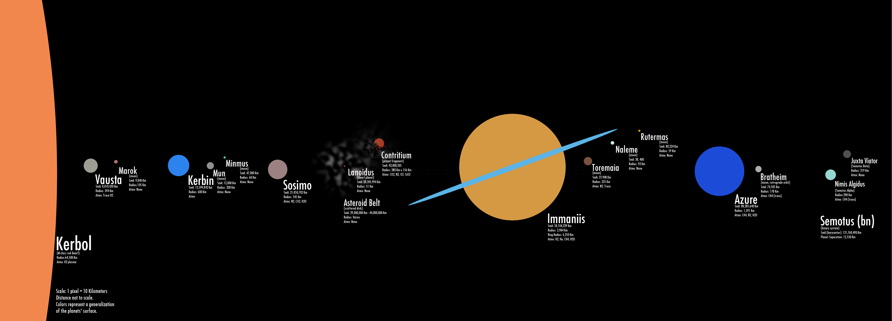

Background
-
Space flight simulation
-
Developed by Squad for Windows, OS X, Linux, PS4 and Xbox One
-
First public release on June 24, 2011
-
Beta release on December 14, 2014
-
Official release on April 27, 2015
Synopsis
-
Takes place in the Kerbol planetary system, with Kerbol as the central body
orbited by 5 planets and 2 dwarf planets.
-
Player controls space program operated by Kerbals, a race of small green humanoids
who inhabit the planet Kerbin.
